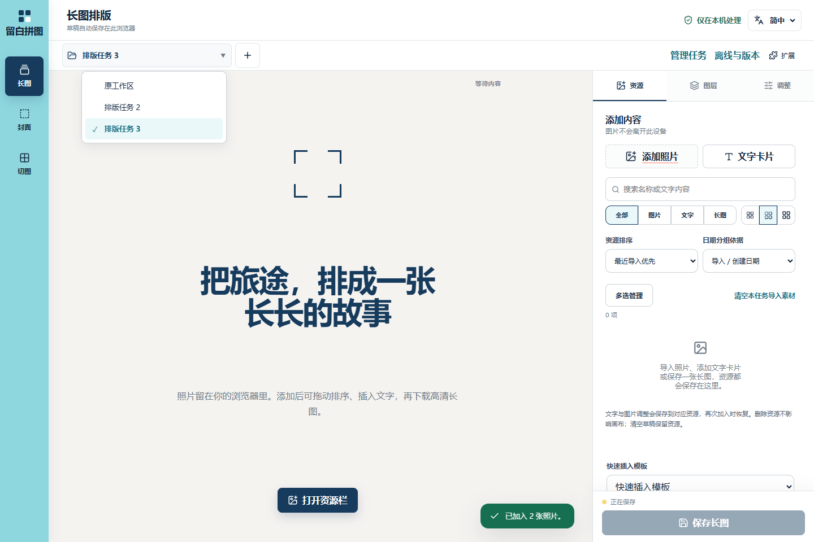
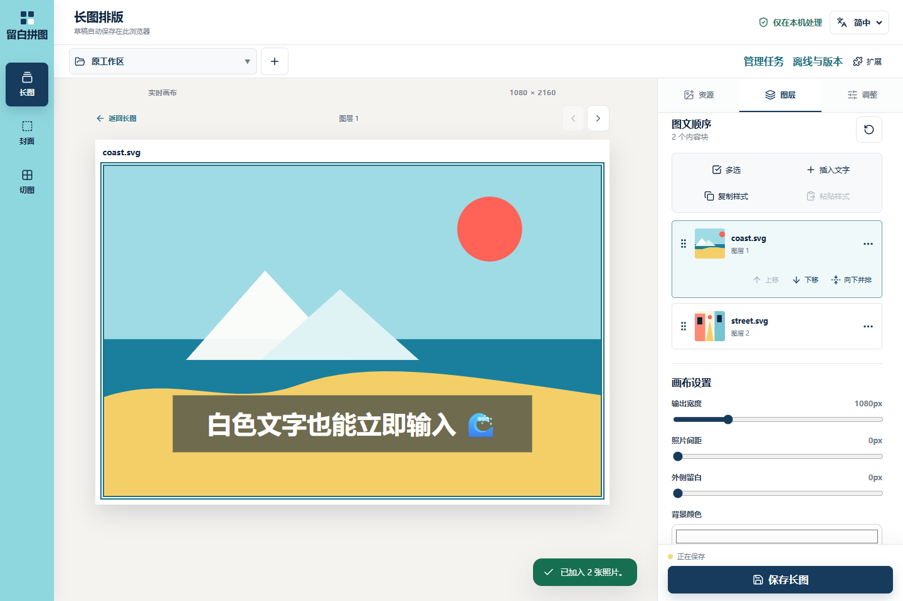
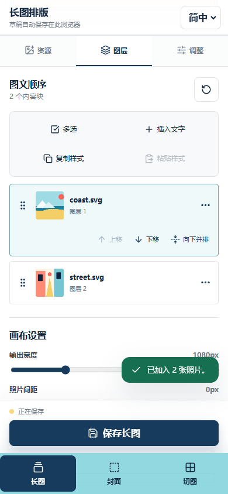
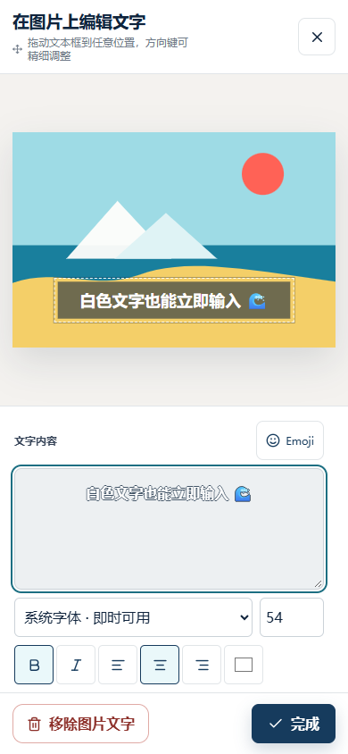
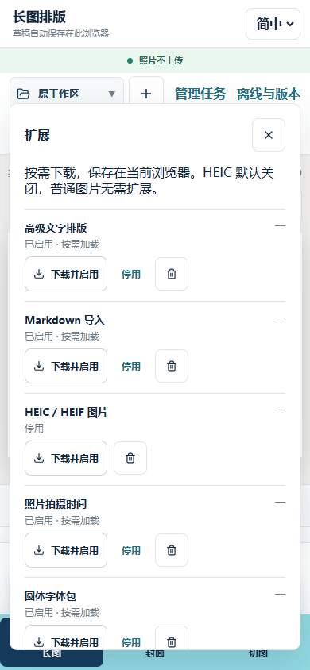

问题与证据
用户报告图片文字白屏、文字输入加载慢，要求调整任务菜单与图层操作，并让 HEIC 等大功能可选加载。阻断旧版 RichTextEditor 动态模块后出现 Failed to fetch dynamically imported module，编辑器数量 0，body 文本长度 0；正常加载为 1。旧版 React.lazy 仅有 Suspense，没有局部异常边界。不能把所有实际白屏都归因于同一次网络错误，因此同时保护编辑器尚未挂载时的 view 访问与组件渲染异常。
旧离线核心清单预取全部脚本，包含约 3.19 MB HEIC 和 486 KB 编辑器；新建文字默认请求 6.14 MB 圆体。后台预取抵消了动态导入的按需效果。
最终行为
- 基础文字输入进入核心包，打开即用，保留颜色、字号、整段样式与浮动 Emoji。浅色字有仅用于编辑的衬底和描边。新建文字默认系统字体，旧作品与记住的样式不被改写。
- “高级排版”加载局部格式编辑器；Markdown 导入另行加载解析器，输出原有版本化 JSON。没有替换为与资源数据脱节的 HTML 渲染。
- 导入失败或组件异常只在编辑器局部恢复，可继续基础输入与重试。旧作品的混合格式在不可用时只读保留；转为纯文本须明确确认。用户开始基础输入后，迟到的高级组件不会自动切换或抢走光标。
- 顶部“扩展”统一管理高级文字、Markdown、HEIC、元数据、字体、Twemoji 与 Fluent。提供下载进度、启用、停用、失败重试与移除下载。HEIC 默认关闭；批量导入保留普通图片，失败列表保留 HEIC 文件并可启用后重试，切图工具也有此入口。
- 核心服务工作线程不预取扩展。显式离线准备只下载应用与当前已启用的扩展；改变选择或移除下载后重新核验。独立扩展缓存跨更新保留，旧哈希模块清理。清单请求绑定当前入口，旧清单不通过校验时局部恢复。
- 任务选择保留原生语义，在支持 base-select 的浏览器中增强菜单。图层全局操作合为两列两行，保留完整无障碍名称、禁用与选中状态；手机扩展浮层置于固定栏上方。
扩展接入结构
featureCatalog.ts定义稳定标识；featurePlugins.ts负责启用偏好、并发去重、超时、加载状态、安装重试与缓存移除。- 功能调用
loadFeature(id, loader, assetKey)；动态模块通过 import 加载，多个字体/表情文件用独立 key 去重。大功能在交互边界调用 installPlugin，失败返回可恢复状态。 offlinePlugin.ts根据产物入口和静态依赖闭包生成 schema 2 清单，区分 core 与扩展 files/bytes。新增扩展需加入入口分类与三语界面文案，并验证不进入 core。- 扩展面板与离线面板消费同一清单和状态。下载保存在当前浏览器，移除不会删除作品；已运行模块在关闭或刷新后释放。此框架面向随应用发布的受控扩展，未提供任意第三方代码安装。
测量与验证
本机 Edge，独立冷浏览器上下文，1440×960 桌面 / 390×844 手机模拟，SVG 合成素材：点击图片文字至完成首次输入分别为 180 / 284 ms。期间高级编辑器、HEIC 和字体请求均为 0；无页面异常或横向溢出。不是生产网络基准，也不能代替真实 iPhone 测量。原始记录与 scripts/capture_editor_plugins.mjs 可复现。
当前产物基础缓存约 0.61 MB（未压缩，含清单，不含扩展），HEIC 为 3.19 MB、高级编辑器约 416 KB、Markdown 新增约 61 KB，均按需加载；Markdown 清单也包含共享的高级编辑器依赖。扩展面板显示的是完整包大小，共享依赖可能已缓存。
- 96 项单测通过，生产构建通过。
- 生产离线桌面/手机 8 项通过：断网重开与高级文字/表情/PNG 导出、HEIC 不预取、下载失败/重试/移除、旧清单局部恢复，以及高级编辑器首次挂载白字可读性。
- 桌面/手机 UI 44 项覆盖，其中桌面触屏排序 1 项不适用。第一批实现已通过 Linux 完整检查。Windows Edge 下载浮窗会干扰同一流程中的页面关闭，因此将项目包恢复与多标签占用分开验证；保留真实的资源恢复与写入保护断言。后续完整结果以本分支 Actions 为准。
- 部署测试 Windows 12 项通过、1 项原生符号链接用例留给 Linux CI。
- 模拟动态导入失败、组件渲染错误、2 秒模块延迟、旧混合格式保护、继续输入及重试恢复通过。真实中文输入法与真实手机的设备验证仍保留。
按技能执行一轮集中截图检查与修正后确认。机械检测给出字体/字号/颜色/圆角建议，主要对应既有样式与 DESIGN.md 刻度差异；未将其当作功能失败，也未整体重设界面。设计 sidecar 为旧快照，本次未重建；Impeccable 4.7.0 更新提示未在项目任务中执行。
界面证据





服务器验证补充
6d34f47 部署后，通过服务器实际页面发现高级编辑器首次挂载的白字辅助类可能因 isInitialized 的时序而缺失。修复为初始属性直接声明基础辅助类，挂载后下一帧安全读取局部颜色，仍批量读写并取消已卸载的帧。新增生产回归在任何按键之前检查文本及描边。
自动更新一度被服务器所选代理节点的 TLS 失败阻断；通过 SSH 实测、经用户同意切换到已验证节点后恢复。更新服务已成功激活发布包，后续定时检查返回 Already up to date，公网 version.json 与服务器版本一致。代理凭据和订阅地址未写入项目。
发布
测试后推送分支，远端完整检查通过后合并 main，自动构建与服务器定时更新仍使用既有流程。Actions 发布记录；线上目标为 momentss.renschekhe.site，版本由 version.json 核验。